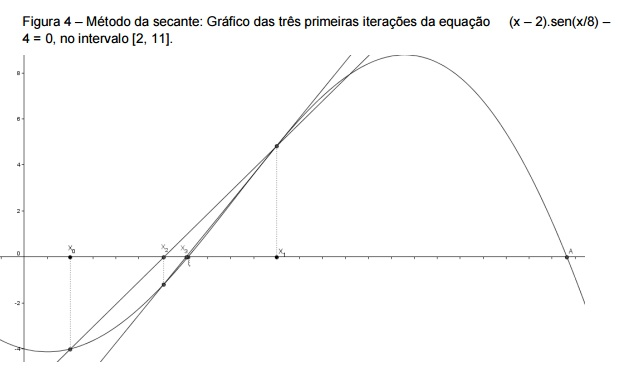

|
O que caracteriza o método da Secante dentro da
família de métodos que utilizam aproximação linear é o fato de usar os pontos obtidos nas duas últimas iterações.

Uma desvantagem do método da Secante é o fato de que, se a função
não for aproximadamente linear no intervalo que contém a raiz, uma aproximação
sucessiva pode sair deste intervalo.
|
|